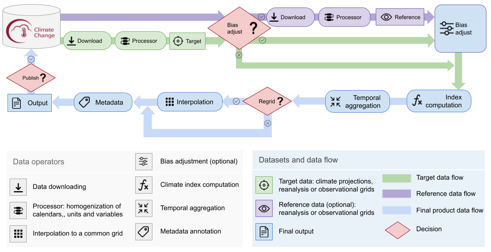

1. Reproducibility of the C3S Atlas Dataset#
This initial chapter provides several notebooks designed to reproduce the calculation of gridded data (variables and indices, see Table 3) included in the C3S Atlas Dataset. These notebooks promote reusability and enable rapid development of customized products tailored to specific applications. Note, however, that the notebook examples cover only specific regions and subsets and cannot be used directly to replicate the entire dataset, as it requires an optimized workflow executed on HPC infrastructure.
Figure 1 provides a schematic representation of the data production workflow, emphasizing the following processing steps:
Download climate data from the C3S-CDS using the CDS API.
Download the reference datasets (only for bias adjusted indices).
Perform data homogenization to ensure the same calendar time, coordinate names, variable units, dimension order, among other things.
Interpolate both the projections and the reference dataset to a regular-common grid using conservative remapping (only for bias adjusted indices).
Calculate the index.
Perform temporal aggregation.
Interpolate to a regular-common grid using conservative remapping (not necessary for bias adjusted indices).

Figure 1. Schematic diagram of the C3S Atlas data production workflow.
Table 1 lists the notebooks included in this chapter, describing the application of the workflow in cases with different complexity (e.g. with and without bias adjustment).
Directory |
Contents |
|---|---|
Jupyter Notebook for calculating the “number of days with maximum temperature over 35°C” (TX35) index using xclim library. |
|
Jupyter Notebook for calculating “number of days with bias-adjusted maximum temperature over 35°C” (TX35bals) index using xclim and ibicus libraries. |
|
Jupyter Notebook for calculating the “Cooling Degree-Days” (CD) index using in-house index functions. |
|
Jupyter Notebook for calculating the bias-adjusted (ISIMIP) precipitation “Consecutive Dry Days (CDD)” index with bias-adjusted (ISIMIP) precipitation using xclim and ibicus functions. |
|
Jupyter Notebook for calculating the “Monthly mean of daily accumulated potential evapotranspiration” (PET) index using the method described in Hargreaves, G. H., and Samani, Z. A. (1985) using xclim library. |
|
Jupyter Notebook for calculating the “Monthly Standardised Precipitation-Evapotranspiration Index (SPEI) for 6 months cumulation period” (SPEI-6) index using xclim library. |
Table 1. Notebooks included as example to reproduce the C3S Atlas data production workflow.
Open Python libraries
Table 2 displays the list of Python libraries used for the implementation of the workflow for index calculation.
Library |
Description |
|---|---|
Python library for managing labelled multi-dimensional arrays. |
|
xclim is a library for climate index calculation built using xarray and can seamlessly benefit from the parallelization handling provided by dask. |
|
Bias adjustment library for climate model data adjustment using observational references. |
|
Regridding library for geospatial data. |
|
The Climate Data Store (CDS) Application Program Interface (API) is a service providing programmatic access to CDS data |
Table 2. List of Python libraries used in the C3S Atlas workflow.
List of indices
Table 3 shows the climate variables and indices included in the C3S Atlas dataset (v2).
Code |
Name Data |
Unit Data |
Description data |
Implementation |
|---|---|---|---|---|
t |
Monthly mean of daily mean temperature |
degC |
Monthly mean of daily mean near-surface (2-metre) air temperature |
t.resample(time=’MS’).mean() |
tn |
Monthly mean of daily minimum temperature |
degC |
Monthly mean of daily minimum near-surface (2-metre) air temperature |
tn.resample(time=’MS’).mean() |
tx |
Monthly mean of daily maximum temperature |
degC |
Monthly mean of daily maximum near-surface (2-metre) air temperature |
tx.resample(time=’MS’).mean() |
tnn |
Monthly minimum of daily minimum temperature |
degC |
Monthly minimum of daily minimum near-surface (2-metre) air temperature |
tn.resample(time=’MS’).min() |
txx |
Monthly maximum of daily maximum temperature |
degC |
Monthly maximum of daily maximum near-surface (2-metre) air temperature |
tx.resample(time=’MS’).max() |
tx35 |
Monthly count of days with maximum temperature above 35 degC |
1 |
Monthly count of days with maximum near-surface (2-metre) air temperature above 35 degC |
xclim.indices.tx_days_above(tx, thresh=’35.0 degC’, freq=’MS’, op=’>’) |
tx40 |
Monthly count of days with maximum temperature above 40 degC |
1 |
Monthly count of days with maximum near-surface (2-metre) air temperature above 40 degC |
xclim.indices.tx_days_above(tx, thresh=’40.0 degC’, freq=’MS’, op=’>’) |
tr |
Monthly count of tropical nights (days with minimum temperature above 20 degC) |
1 |
Monthly count of days with minimum near-surface (2-metre) air temperature above 20 degC |
xclim.indicators.atmos.tropical_nights(tasmin=tn, thresh=’20.0 degC’, freq=’MS’, op=’>’) |
dtr |
Monthly mean of daily temperature range |
degC |
Monthly mean of daily near-surface (2-metre) air temperature range |
xclim.indices.daily_temperature_range(tn, tx, freq=’MS’, op=’mean’) |
fd |
Monthly count of frost days |
1 |
Monthly count of days with minimum near-surface (2-metre) air temperature below 0 degC |
xclim.indicators.atmos.frost_days(tn, thresh=’0 degC’, freq=’MS’) |
hd |
Annual heating degree-days |
degC day |
Annual energy consumption to heat the deficit of temperature below 15.5 degC |
c3s_atlas.lib.indexes.hd(t, tx, tn, freq=’YS’, thresh=15.5) |
cd |
Annual cooling degree-days |
degC day |
Annual energy consumption to cool the excess of temperature above 22 degC |
c3s_atlas.lib.indexes.cd(t, tx, tn, freq=’YS’, thresh=22) |
r |
Monthly mean of daily accumulated precipitation |
mm |
Monthly mean of daily accumulated precipitation of liquid water equivalent from all phases |
r.resample(time=’MS’).mean() |
r01 |
Monthly count of days with daily accumulated precipitation above 1 mm |
1 |
Monthly count of days with daily accumulated precipitation of liquid water equivalent from all phases above 1 mm |
xclim.indices.days_over_precip_thresh(r, 0, thresh=’1 mm/day’, freq=’MS’, bootstrap=False, op=’>’) |
sdii |
Monthly mean of daily accumulated precipitation on wet days (above 1 mm) |
mm |
Monthly average of daily precipitation amount of liquid water equivalent from all phases on days with precipitation amount above or equal to 1 mm |
xclim.indicators.atmos.daily_pr_intensity(r=r, thresh=’1 mm/day’, freq=’MS’, op=’>=’) |
r10 |
Monthly count of days with daily accumulated precipitation above 10 mm |
1 |
Monthly count of days with daily accumulated precipitation of liquid water equivalent from all phases above 10 mm |
xclim.indices.days_over_precip_thresh(r, 0, thresh=’10 mm/day’, freq=’MS’, bootstrap=False, op=’>’) |
r20 |
Monthly count of days with daily accumulated precipitation above 20 mm |
1 |
Monthly count of days with daily accumulated precipitation of liquid water equivalent from all phases above 20 mm |
xclim.indices.days_over_precip_thresh(r, 0, thresh=’20 mm/day’, freq=’MS’, bootstrap=False, op=’>’) |
rx1day |
Monthly maximum of 1-day accumulated precipitation |
mm |
Monthly maximum of 1-day accumulated precipitation of liquid water equivalent from all phases |
xclim.indicators.atmos.max_n_day_precipitation_amount(r, window=1, freq=’MS’) |
rx5day |
Monthly maximum of 5-day accumulated precipitation |
mm |
Monthly maximum of 5-day accumulated precipitation of liquid water equivalent from all phases |
xclim.indicators.atmos.max_n_day_precipitation_amount(r, window=5, freq=’MS’) |
cdd |
Annual maximum consecutive dry days (below 1 mm) |
day |
Annual maximum of consecutive days when daily accumulated precipitation amount is below 1 mm |
xclim.indices.maximum_consecutive_dry_days(r, thresh=’1 mm/day’, freq=’YS’, resample_before_rl=True) |
spi6 |
Monthly Standardised Precipitation Index (SPI) for 6 months cumulation period |
1 |
Monthly index that compares accumulated precipitation for 6 months with the long-term precipitation distribution for the same location and accumulation period, as the number of standard deviations from the mean. The reference period corresponds to 1971-2010 for observations, reanalysis, and historical projections, and to 1971-2100 for the future scenario projections |
xclim.indices.standardized_precipitation_index(r, r_cal, freq=”MS”, window =6, dist=”gamma”, method=”ML”) |
spei6 |
Monthly Standardised Precipitation-Evapotranspiration Index (SPEI) for 6 months cumulation period |
1 |
Monthly index that compares accumulated precipitation minus potential evapotranspiration (Hargreaves 1985, 1994 method) for 6 months with the long-term distribution for the same location and accumulation period, as the number of standard deviations from the mean. The reference period corresponds to 1971-2010 for observations, reanalysis, and historical projections, and to 1971-2100 for the future scenario projections |
xclim.indices.standardized_precipitation_evapotranspiration_index(wb, wb_cal, freq=”MS”, window=6, dist=”fisk”, method=”ML”, offset = abs(np.min(wb))) |
pet |
Monthly mean of daily accumulated potential evapotranspiration |
mm |
Potential evapotranspiration (Hargreaves 1985, 1994) is the rate at which evapotranspiration would occur under ambient conditions from a uniformly vegetated area when the water supply is not limiting |
xclim.indices.potential_evapotranspiration(tn, tx, method=’HG85’) |
huss |
Monthly mean near surface specific humidity |
gr kg-1 |
Monthly amount of moisture in the air near the surface (2-metre) divided by amount of air plus moisture |
huss.resample(time=’MS’).mean() |
evspsbl |
Monthly mean of daily accumulated evaporation (including sublimation and transpiration) |
mm |
Monthly mean of daily amount of water in the atmosphere due to conversion of both liquid and solid phases to vapor (from underlying surface and vegetation) |
evspsbl.resample(time=’MS’).mean() |
mrsos |
Monthly mean of daily accumulated soil moisture in upper soil portion |
kg m-2 |
Monthly soil shallow moisture content, as the vertical sum per unit area of water in all phases contained in the upper soil portion to a depth of 7 to 10 cm (depending on the dataset) |
mrsos.resample(time=’MS’).mean() |
mrro |
Monthly mean of daily accumulated runoff |
mm |
Monthly mean of daily amount per unit area of surface and subsurface liquid water which drains from land |
mrro.resample(time=’MS’).mean() |
prsn |
Monthly mean of daily accumulated snowfall precipitation |
mm |
Monthly mean of daily accumulated liquid water equivalent thickness snowfall |
prsn.resample(time=’MS’).mean() |
siconc |
Monthly mean of sea-ice area percentage |
percent |
Monthly mean fraction (%) of sea grid cell area covered by ice |
siconc.resample(time=’MS’).mean() |
sfcwind |
Monthly mean of daily mean wind speed |
m s-1 |
Monthly mean of daily mean near-surface (10-metre) wind speed |
sfcwind.resample(time=’MS’).mean() |
clt |
Monthly mean cloud cover area percentage |
% |
Monthly mean fraction (%) of the sky covered by clouds |
clt.resample(time=’MS’).mean() |
rsds |
Monthly mean of surface solar radiation downwards |
W m-2 |
Monthly mean of incident solar (shortwave) radiation that reaches a horizontal plane at the surface |
rsds.resample(time=’MS’).mean() |
rlds |
Monthly mean of surface thermal radiation downwards |
W m-2 |
Monthly incident thermal (longwave) radiation at the surface (during cloudless and overcast conditions) |
rlds.resample(time=’MS’).mean() |
sst |
Monthly mean of sea surface temperature |
degC |
Monthly mean temperature of sea water near the surface |
sst.resample(time=’MS’).mean() |
psl |
Monthly average of mean sea level pressure |
hPa |
Monthly average air pressure at mean sea level |
psl.resample(time=’MS’).mean() |
Table 3. Description of the climate variables and indices included in the second version of the C3S Atlas. The first four columns indicate the code, name, units, and description of the indices. The last column includes the Python command used to compute the C3S Atlas indices from daily data, either using xarray, xclim or in-house. Input variables used to compute each index are defined with its code name (e.g. t for daily mean air temperature) functions.
Bias corrected indices
For threshold-dependent indices the C3S Atlas includes both raw and bias-adjusted information, using two alternative methods: the simple LinearScaling (Douglas Maraun 2016) and more advanced trend preserving method ISIMIP (Lange 2019).
Ibiscu Method |
Function |
Parameters |
Description |
|---|---|---|---|
LinearScaling |
LinearScaling (daily temperature, t) |
“running_window_mode”: True, “running_window_length”: 30, “running_window_step_length”: 30 |
Linear scaling method based on Douglas Maraun 2016. Reference period used for BA: 1980-2005 (CMIP5/6 using WFDE5) and 1970-2005 (CORDEX-EUR-11 using E-OBS and CORDEX-CORE using ERA5-Land) |
ISIMIP |
ISIMIP (daily temperature, t) |
“running_window_mode”: False |
ISIMIP trend preserving method based on Lange 2021. Reference period used for BA: 1980-2005 (CMIP5/6 using WFDE5) and 1970-2005 (CORDEX-EUR-11 using E-OBS and CORDEX-CORE using ERA5-Land) |
ISIMIP |
ISIMIP (daily precipitation; r) |
“lower_bound”: 0, “lower_threshold”: 0.1, “upper_bound”: np.inf, “upper_threshold”: np.inf, “distribution”: scipy.stats.gamma, “trend_preservation_method”: “mixed”, “running_window_mode”: False |
Table 4. Specific functions and parameters of the Python Ibicus package used in the C3S Atlas for bias-adjusted variables.